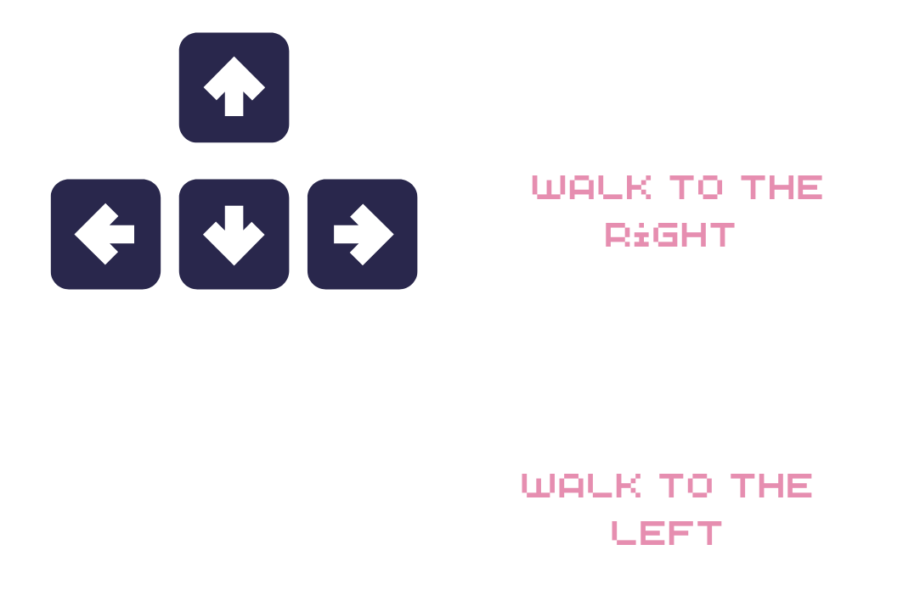
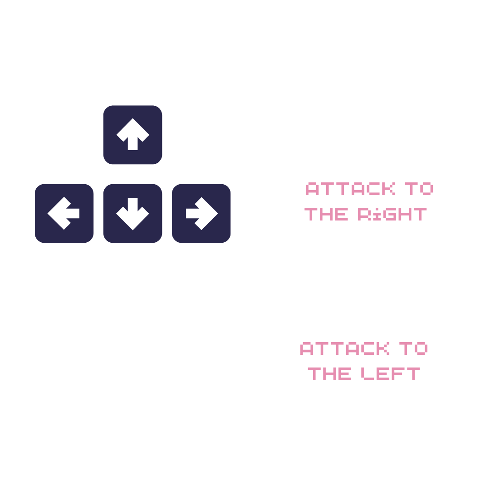
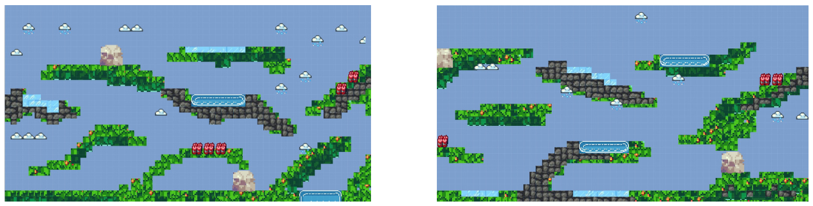
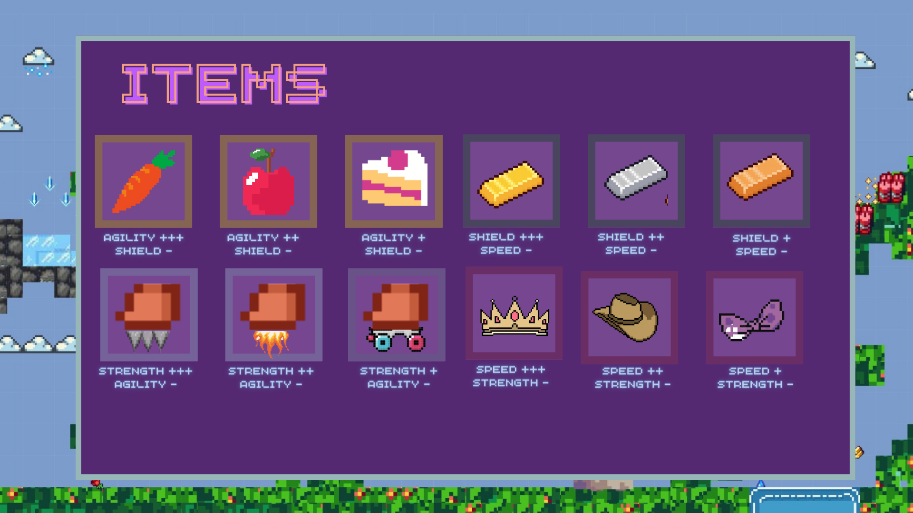
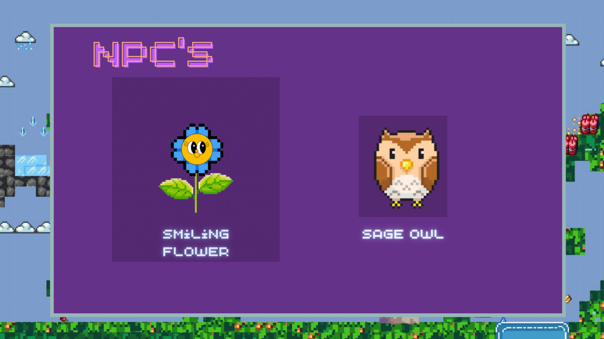
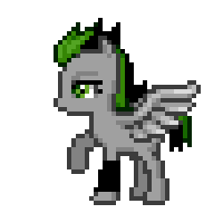
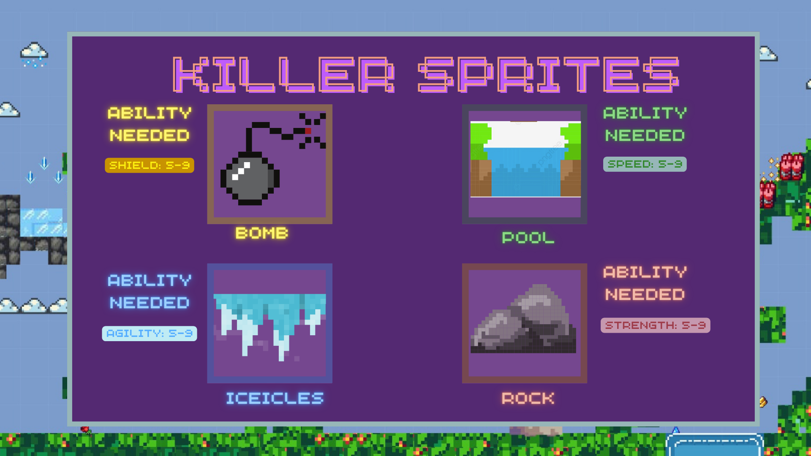
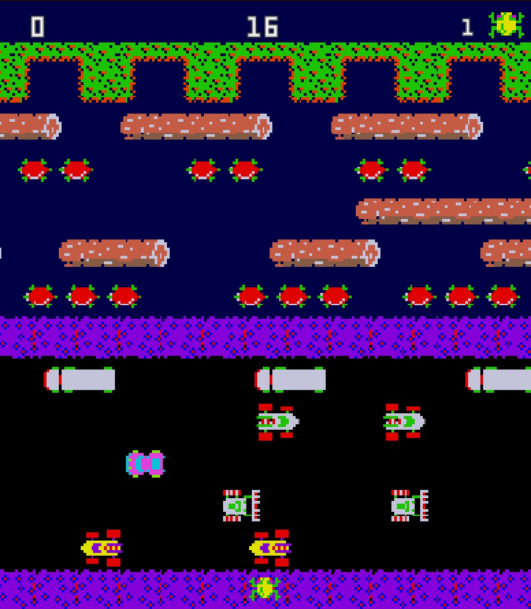

Users Manual
Operating Instructions
To move Toby use arrow keys and the spacebar to jump.
To open and close inventory press I.
To equip and unequip items click them. Be patient! Don't double click the items, you're going to drop them.
Equip before getting to the obstacles! Once you get there you have to decide if you can overcome them with the already equiped items.
In the final battle, you need to hold the arrow keys.
Make sure to equip right! Once you get to the final battle you're going to have seven seconds to equip the right items. You can't open the inventory during the battle!
How to Play
As this game proceeds the screen advances with Toby. Each level is made up out of 5 different maps, and they will be placed randomly every time you play the level.
Along the way there are bombs, ice zones, water pits and gigant rocks. The items will help you overcome each obstacle, be careful, you need different statistics to be able to go through them.
In the fith area of every level Toby will face the Evil Equine, make sure to equip with the right items in order to defeat him and move on to the next level. Whether or not Toby makes it to the Pegassus world depends on you. You're going to need sharp wits to complete this quest, good luck!
Items and shields
There are different items and shields that will help Toby achieve his mission.
Check out the stats that each of them give you! Be careful they don't always give you the same sats, check your inventory.
Toby's Friends
If you come across smiling flowers or an owl, don't worry! They will help you out by giving you tips on how to overcome obstacles or defeat the evil mule.
Enemies and Obstacles
Meet the Evil Pegassus, the enemy that will try to stop Toby.
Be careful, he evolves along with Toby and his attacks become more and more powerful. Each evolution has different strenghts and weaknesses, its up to you to find out the correct combination of items to defeat him.
This are the obstacles that toby will face on his journey. Check out the stats needed to overcome them!
Dungeon
Are you brave enough to face the dungeon?
There will be different chances to enter the dungoen along the levels, if you enter and win it, you'll get the chance to obtain special items.
Be careful, if you lose you'll have to start the level all over again and you will lose the items you had before you entered the dungeon.
